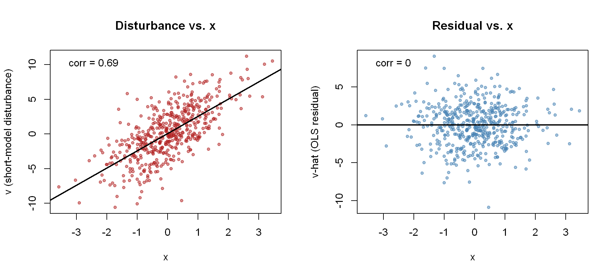

# Install any missing packages
packages <- c("MASS", "knitr", "modelsummary")
missing <- packages[!packages %in% rownames(installed.packages())]
if (length(missing) > 0) install.packages(missing)Residual Orthogonality vs. Exogeneity
Lecture 5 Demo
NYU - Applied Statistics and Econometrics I
The distinction
In the population model
\[ \mathbf y=\mathbf X\boldsymbol\beta+\boldsymbol\varepsilon, \]
\(\boldsymbol\varepsilon\) is the unobserved disturbance. OLS produces the sample residual
\[ \widehat{\boldsymbol\varepsilon} =\mathbf y-\mathbf X\widehat{\boldsymbol\beta}. \]
The normal equations guarantee
\[ \boxed{\mathbf X'\widehat{\boldsymbol\varepsilon}=\mathbf 0}. \]
But exogeneity is a population assumption:
\[ \boxed{E[\boldsymbol\varepsilon\mid\mathbf X]=\mathbf 0}. \]
It implies \(E[X_j\varepsilon]=0\), but residual orthogonality holds by construction, whether or not exogeneity is true.
Goal of this demo: show why \(\mathbf X'\widehat{\boldsymbol\varepsilon}=0\) cannot be used to test exogeneity.
1 Setup
1.1 Packages
1.2 Simulate a known DGP
We will make the distinction between a population and a sample explicit.
First, we create an artificial population of 100,000 observations. Because we create the population ourselves, we know exactly how the variables are related in the population.
For each population member \(i=1,\ldots,100{,}000\), we generate:
- \(x_i\): a regressor;
- \(w_i\): another variable that affects \(y_i\);
- \(\varepsilon_i\): the disturbance in the true model.
We specify the population correlations
\[ \operatorname{Corr}(x,w)=0.8, \qquad \operatorname{Corr}(x,\varepsilon)=0, \qquad \operatorname{Corr}(w,\varepsilon)=0. \]
# Size of our artificial population
N <- 100000
# Population correlation matrix for x, w, and epsilon
rho <- matrix(c(1.0, 0.8, 0.0,
0.8, 1.0, 0.0,
0.0, 0.0, 1.0),
nrow = 3, byrow = TRUE,
dimnames = list(c("x", "w", "epsilon"),
c("x", "w", "epsilon")))
# Population means and standard deviations
mu <- c(0, 0, 0)
sds <- c(1, 1, 2)
# Convert correlations and standard deviations into a covariance matrix
Sigma <- diag(sds) %*% rho %*% diag(sds)
set.seed(1001)
# Create the artificial population.
# empirical = TRUE makes its moments match the values specified above.
population <- as.data.frame(
MASS::mvrnorm(n = N, mu = mu, Sigma = Sigma, empirical = TRUE)
)
colnames(population) <- c("x", "w", "epsilon")
# Check the correlations in our artificial population
knitr::kable(cor(population), digits = 3,
caption = "Artificial Population Correlations (N = 100,000)")| x | w | epsilon | |
|---|---|---|---|
| x | 1.0 | 0.8 | 0 |
| w | 0.8 | 1.0 | 0 |
| epsilon | 0.0 | 0.0 | 1 |
Think of these 100,000 observations as our population. In real empirical work we generally do not observe the whole population or the disturbance \(\varepsilon_i\). Here we created both, so we can use them to see what sampling and OLS do.
1.3 The data-generating process
Let
\[ y_i=\beta_1+\beta_2x_i+\beta_3w_i+\varepsilon_i, \]
with
\[ \beta_1=0,\qquad \beta_2=2,\qquad \beta_3=3. \]
# Set the true population coefficients
beta_1 <- 0 # intercept
beta_2 <- 2 # coefficient on x
beta_3 <- 3 # coefficient on w
# Construct y for every unit in the artificial population
population$y <- beta_1 + beta_2 * population$x +
beta_3 * population$w + population$epsilon
head(population)Every one of the 100,000 units now has its own \(x_i\), \(w_i\), \(\varepsilon_i\), and \(y_i\). The population is complete; next we sample from it.
1.4 Draw a random sample
Now suppose we observe only a random sample of \(n=500\) units from this population. Sampling a unit means taking its entire row: \(x_i\), \(w_i\), \(y_i\), and (though we would not see it in real data) \(\varepsilon_i\).
# Sample size
n <- 500
# Randomly select 500 observations from the population
set.seed(5678)
sample_rows <- sample(1:N, size = n, replace = FALSE)
# Take every variable for those 500 units, including y.
# This is the sample we will use for the regressions below
df <- population[sample_rows, ]
# Compare population and sample correlations
cor_comparison <- data.frame(
Quantity = c("corr(x, w)",
"corr(x, epsilon)",
"corr(w, epsilon)"),
Population = c(cor(population$x, population$w),
cor(population$x, population$epsilon),
cor(population$w, population$epsilon)),
Sample = c(cor(df$x, df$w),
cor(df$x, df$epsilon),
cor(df$w, df$epsilon))
)
knitr::kable(cor_comparison, digits = 4,
caption = "Population vs. Sample Correlations")| Quantity | Population | Sample |
|---|---|---|
| corr(x, w) | 0.8 | 0.7877 |
| corr(x, epsilon) | 0.0 | 0.0693 |
| corr(w, epsilon) | 0.0 | 0.0675 |
What is in df? Drawing the sample copies each selected unit’s full row from the population. So df$y, df$x, and df$w are the sampled units’ data, and df$epsilon holds their true disturbances. Nothing has been generated or estimated for the sample; it is simply a subset of the population. We can see these values only because we built the population ourselves; in real data they would be unobserved.
The population correlations are the relationships we built into the DGP, computed over all 100,000 units. The sample correlations use the same variables, including the same true \(\varepsilon_i\)’s, but are computed over only the 500 units we happened to draw.
They will generally not match exactly. In particular,
\[ \operatorname{Corr}_{pop}(x,\varepsilon)=0 \]
does not imply that the realized sample correlation is exactly zero:
\[ \operatorname{Corr}_{sample}(x,\varepsilon)\neq 0 \quad \text{in general.} \]
The difference is sampling variation.
2 Omit \(w\)
Suppose we do not observe \(w\) and estimate the short regression
\[ y_i=\beta_1+\beta_2x_i+v_i. \]
Equivalently, rewrite the true DGP as
\[ y_i=\beta_1+\beta_2x_i+\underbrace{(\beta_3w_i+\varepsilon_i)}_{v_i\;\text{ = new disturbance}}. \]
Thus
\[ \boxed{v_i=\beta_3w_i+\varepsilon_i}. \]
Because \(w_i\) is correlated with \(x_i\), the new disturbance \(v_i\) is also correlated with \(x_i\). Exogeneity fails.
# Correct regression: include both x and w
mdl_full <- lm(y ~ x + w, data = df)
# Short regression: deliberately omit w
mdl_short <- lm(y ~ x, data = df)
# The same two regressions run on the entire population (for comparison)
pop_full <- lm(y ~ x + w, data = population)
pop_short <- lm(y ~ x, data = population)
modelsummary::modelsummary(
list("Full model: y ~ x + w" = mdl_full,
"Short model: y ~ x" = mdl_short),
stars = TRUE,
gof_map = c("nobs", "r.squared")
)| Full model: y ~ x + w | Short model: y ~ x | |
|---|---|---|
| + p < 0.1, * p < 0.05, ** p < 0.01, *** p < 0.001 | ||
| (Intercept) | 0.185* | 0.086 |
| (0.085) | (0.121) | |
| x | 2.079*** | 4.487*** |
| (0.135) | (0.118) | |
| w | 3.063*** | |
| (0.135) | ||
| Num.Obs. | 500 | 500 |
| R2 | 0.873 | 0.743 |
Even the correctly specified full model does not return exactly 2 and 3 in our sample (it gives 2.079 and 3.063). That is sampling variation again: run on the entire population, the same regression gives 2 and 3.
The coefficient on \(x\) changes from 2.079 in the full model to 4.487 in the short model (4.4 in the population). We will study omitted-variable bias formally later; here the question is what the residuals reveal about the failure of exogeneity.
3 Residuals vs. the short-model disturbance
3.1 The residuals still satisfy the normal equations
# Save the OLS residual from the short regression
# for each of the 500 observations
vhat <- resid(mdl_short)
data.frame(
Property = c("Sum of residuals",
"Sum of x * residuals",
"cor(residuals, x)",
"cor(residuals, fitted values)"),
Value = c(sum(vhat),
sum(df$x * vhat),
cor(vhat, df$x),
cor(vhat, fitted(mdl_short)))
) |>
knitr::kable(digits = 10, row.names = FALSE,
caption = "Algebraic Properties of the Short-Regression Residuals")| Property | Value |
|---|---|
| Sum of residuals | 0 |
| Sum of x * residuals | 0 |
| cor(residuals, x) | 0 |
| cor(residuals, fitted values) | 0 |
All are zero up to floating-point error. The residuals are orthogonal to the included regressor even though exogeneity is false.
4 Where did the correlation go?
The short regression is
\[ y_i=\beta_1+\beta_2x_i+v_i. \]
If \(v_i\) is correlated with \(x_i\), part of the variation in \(v_i\) is systematically related to \(x_i\). OLS attributes that part to the fitted regression line, changing \(\widehat\beta_2\).
What remains is the residual \(\widehat v_i\). The normal equations guarantee
\[ \boxed{\sum_{i=1}^n x_i\widehat v_i=0}. \]
So the residual is uncorrelated with \(x\) by construction, even though the disturbance \(v\) is correlated with \(x\).
# Regress the true short-model disturbance v on x.
# This shows the part of v that is linearly related to x.
v_on_x <- lm(v ~ x, data = df)
data.frame(
Check = c("Slope of v on x",
"beta_2-hat minus true beta_2",
"Max |resid(v ~ x) - resid(y ~ x)|"),
Value = c(coef(v_on_x)["x"],
coef(mdl_short)["x"] - beta_2,
max(abs(resid(v_on_x) - vhat)))
) |>
knitr::kable(digits = 6, row.names = FALSE)| Check | Value |
|---|---|
| Slope of v on x | 2.487392 |
| beta_2-hat minus true beta_2 | 2.487392 |
| Max |resid(v ~ x) - resid(y ~ x)| | 0.000000 |
The slope from regressing \(v\) on \(x\) is exactly the amount added to the estimated slope on \(x\). The residuals from the two regressions are also identical.
4.1 Visualizing it
par(mfrow = c(1, 2))
plot(df$x, df$v,
xlab = "x", ylab = "v (short-model disturbance)",
main = "Disturbance vs. x",
pch = 20, col = adjustcolor("firebrick", 0.5))
abline(v_on_x, col = "black", lwd = 2)
legend("topleft", bty = "n",
legend = paste0("corr = ", round(cor(df$v, df$x), 2)))
plot(df$x, vhat,
xlab = "x", ylab = "v-hat (OLS residual)",
main = "Residual vs. x",
pch = 20, col = adjustcolor("steelblue", 0.5))
abline(h = 0, col = "black", lwd = 2)
legend("topleft", bty = "n",
legend = paste0("corr = ", round(cor(vhat, df$x), 2)))
The left panel shows the failure of exogeneity. The right panel cannot reveal it: residual orthogonality is imposed by OLS.
5 One more subtlety: residuals are not disturbances
Even when the model is correctly specified, the realized disturbance \(\varepsilon_i\) and the OLS residual \(\widehat\varepsilon_i\) are generally not identical.
We can see this using the same 500 sampled units and the correctly specified full regression. For each unit we have two numbers side by side:
- \(\varepsilon_i\): its true disturbance, copied from the population (unobserved in real data);
- \(\widehat\varepsilon_i\): its OLS residual from
y ~ x + w(always observed).
# Save the residuals from the correctly specified regression
epsilonhat <- resid(mdl_full)
fmt <- function(z) formatC(round(z, 4) + 0, format = "f", digits = 4) # "+ 0" avoids printing -0.0000
data.frame(
Quantity = c("corr(epsilon, x): true disturbances",
"corr(epsilon-hat, x): OLS residuals",
"mean(epsilon): true disturbances",
"mean(epsilon-hat): OLS residuals",
"corr(epsilon, epsilon-hat)"),
Sample = fmt(c(cor(df$epsilon, df$x),
cor(epsilonhat, df$x),
mean(df$epsilon),
mean(epsilonhat),
cor(df$epsilon, epsilonhat))),
Population = c(fmt(cor(population$epsilon, population$x)),
"n/a",
fmt(mean(population$epsilon)),
"n/a",
"n/a")
) |>
knitr::kable(align = c("l", "r", "r"), row.names = FALSE,
col.names = c("Quantity", "Sample (n = 500)", "Population (N = 100,000)"),
caption = "Correct Model: True Disturbances vs. OLS Residuals")| Quantity | Sample (n = 500) | Population (N = 100,000) |
|---|---|---|
| corr(epsilon, x): true disturbances | 0.0693 | 0.0000 |
| corr(epsilon-hat, x): OLS residuals | 0.0000 | n/a |
| mean(epsilon): true disturbances | 0.1847 | 0.0000 |
| mean(epsilon-hat): OLS residuals | 0.0000 | n/a |
| corr(epsilon, epsilon-hat) | 0.9974 | n/a |
Reading the table:
- True disturbances. Across all 100,000 units, \(\varepsilon\) is uncorrelated with \(x\) and has mean zero, as the DGP specifies. Across the 500 units we drew, the correlation is 0.069 and the mean is 0.185. Exogeneity is not failing here: these are the same true disturbances, averaged over a smaller set of units, so the sample values wobble around the population values. This is sampling variation. (The same 0.069 appeared in the population-vs.-sample table at the start.)
- OLS residuals. Their correlation with \(x\) and their mean are zero up to numerical rounding, because the normal equations impose this exactly in the sample. Residuals exist only for the sampled units, so they have no population column.
- Residuals vs. disturbances. The two are highly correlated (0.997) but not identical. OLS removed the small part of the sampled \(\varepsilon\)’s that happened to line up with \(x\) and \(w\), and moved it into \(\widehat\beta\). That is also why the full-model estimates in our sample are not exactly 2 and 3.
6 Takeaways
- \(\boldsymbol\varepsilon\) (or \(\mathbf v\) in the short model) is an unobserved disturbance; \(\widehat{\boldsymbol\varepsilon}\) or \(\widehat{\mathbf v}\) is a sample residual.
- \(\mathbf X'\widehat{\boldsymbol\varepsilon}=0\) is an algebraic property of OLS, not evidence that exogeneity holds.
- \(E[\boldsymbol\varepsilon\mid\mathbf X]=\mathbf 0\) is a population assumption and implies population orthogonality.
- A disturbance can be correlated with an included regressor even though the OLS residual is uncorrelated with that regressor.
- Even under a correctly specified model, residuals generally are not the realized disturbances.